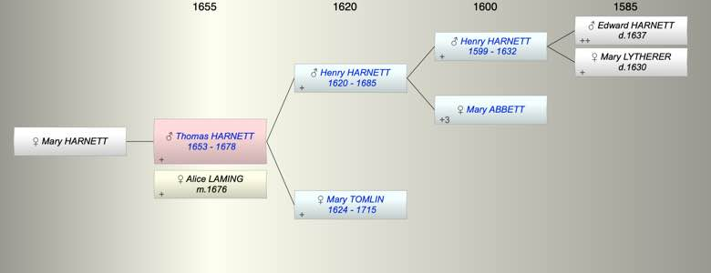

| [Index] |
| Thomas HARNETT (1653 - 1678) |
|  |
| b. 1653 at St Laurence |
| m. 16 Jan 1676 Alice LAMING at St Laurence |
| d. 28 Aug 1678 at St Laurence aged 25 |
| Parents: |
| Henry HARNETT (1620 - 1685) |
| Mary TOMLIN (1624 - 1715) |
| Siblings (4): |
| Edward HARNETT (1643 - ) |
| Mary HARNETT (1646 - ) |
| Ann HARNETT (1649 - ) |
| Peter HARNETT (1658 - 1720) |
| Children (1): |
| Mary HARNETT |
| Events in Thomas HARNETT (1653 - 1678)'s life | |||||
| Date | Age | Event | Place | Notes | Src |
| 1653 | Thomas HARNETT was born | St Laurence | Note 1 | ||
| 16 Jan 1676 | 23 | Married Alice LAMING | St Laurence | ex FMP PR no further details | |
| 28 Aug 1678 | 25 | Thomas HARNETT died | St Laurence | Note 2 | |
| Note 1: bap St Lawrence 21 Apr 1653 son of Henery and Mary ex FMP |
| Note 2: ex Cotton in his 26th year leaving his wife Alice and daughter Mary ex MI |
| Personal Notes: |
| will 1678 available |
| Created on a Mac™ using iFamily for Mac™ on 8 Oct 2023 |